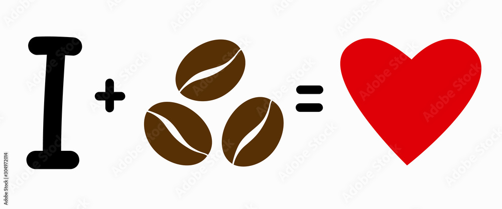

How it all happened?
We are a Coffee company that was started by a student as a side hustle.
It started off with myself being tired all the time and found out that it would be cheaper to roast my own coffee that to buy my coffee everyday from somewhere.
As a result of me staying up late to finish my homework and having coffee as my main source of energy. I came up with the name Coffee Abusers as it's
what I was doing everyday I stayed up late to finish homework. I decided to sell Coffee Beans to others when I saw that there were high margins and enough money to make
to cover my university expenses while still being able to keep up with my studies.
What's the future?
While it was a side hustle inittialy I gradually fell in love with selling coffee and making others happy! I knew I was giving students and employees a cheaper alternative for Coffee. Right now I'm looking to find a supplier and to automate my business more so the whole world gets to taste my coffee. That way people would stop abusing their friends and abuse my coffee instead.
